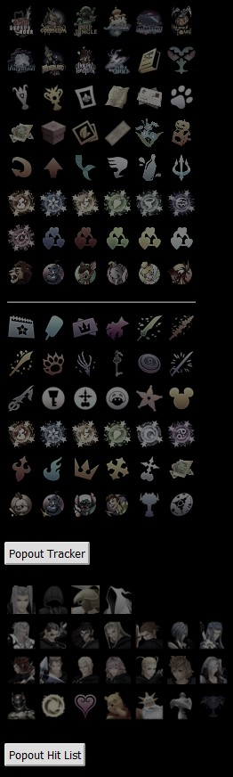

Kingdom Hearts Archipelago Tracker
Item tracker that supports KH1 and KH2 AP randomizers.
https://cj-2123.github.io/cj-kh-ap-tracker/Features
- Tracker for important items for both KH1 and KH2 AP Randomizers
- Scroll wheel functionality to track and increment/decrement items
- Ability to popout tracker
Future Work
- Add support for other KH randomizers as they get Archipelago support
- KH Recom if applicable
- BBS soontm?
- Add ability to toggle different games if more get added